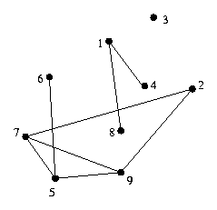

Farmer John's fields are broken into fields, with paths between some of them. Unfortunately, some fields are not reachable from other fields via the paths.
Define a superfield as a collection of fields that are all reachable from each other. Calculate the number of superfields.
Given: an undirected graph
The component of a graph is a maximal-sized (though not necessarily maximum) subgraph which is connected.
Calculate the component of the graph.

This graph has three components: {1,4,8}, {2,5,6,7,9}, and {3}.
Flood fill can be performed three basic ways: depth-first, breadth-first, and breadth-first scanning. The basic idea is to find some node which has not been assigned to a component and to calculate the component which contains it. The question is how to calculate the component.
In the depth-first formulation, the algorithm looks at each step through all of the neighbors of the current node, and, for those that have not been assigned to a component yet, assigns them to this component and recurses on them.
In the breadth-first formulation, instead of recursing on the newly assigned nodes, they are added to a queue.
In the breadth-first scanning formulation, every node has two values: component and visited. When calculating the component, the algorithm goes through all of the nodes that have been assigned to that component but not visited yet, and assigns their neighbors to the current component.
The depth-first formulation is the easiest to code and debug, but can require a stack as big as the original graph. For explicit graphs, this is not so bad, but for implicit graphs, such as the problem presented has, the numbers of nodes can be very large.
The breadth-formulation does a little better, as the queue is much more efficient than the run-time stack is, but can still run into the same problem. Both the depth-first and breadth-first formulations run in N + M time, where N is the number of vertices and M is the number of edges.
The breadth-first scanning formulation, however, requires very little extra space. In fact, being a little tricky, it requires no extra space. However, it is slower, requiring up to N*N + M time, where N is the number of vertices in the graph.
This code uses a trick to not use extra space, marking nodes to be visited as in component -2 and actually assigning them to the current component when they are actually visited.
# component(i) denotes the
# component that node i is in
1 function flood_fill(new_component)
2 do
3 num_visited = 0
4 for all nodes i
5 if component(i) = -2
6 num_visited = num_visited + 1
7 component(i) = new_component
8 for all neighbors j of node i
9 if component(j) = nil
10 component(j) = -2
11 until num_visited = 0
12 function find_components
13 num_components = 0
14 for all nodes i
15 component(node i) = nil
16 for all nodes i
17 if component(node i) is nil
18 num_components =
num_components + 1
19 component(i) = -2
20 flood_fill(component
num_components)
Running time of this algorithm is O(N 2), where N is the numbers of nodes. Every edge is traversed twice (once for each end-point), and each node is only marked once.
Consider the graph from above.
The algorithm starts with all nodes assigned to no component.
Going through the nodes in order first node not assigned to any component yet is vertex 1. Start a new component (component 1) for that node, and set the component of node 1 to -2 (any nodes not shown are unassigned).
| Node | Component |
| 1 | -2 |
Now, in the flood_fill code, the first time through the do loop, it finds the node 1 is assigned to component -2. Thus, it reassigns it to component 1, signifying that it has been visited, and then assigns its neighbors (node 4) to component -2.
| Node | Component |
| 1 | 1 |
| 4 | -2 |
As the loop through all the nodes continues, it finds that node 4 is also assigned to component -2, and processes it appropriately as well.
| Node | Component |
| 1 | 1 |
| 4 | 1 |
| 8 | -2 |
Node 8 is the next to be processed.
| Node | Component |
| 1 | 1 |
| 4 | 1 |
| 8 | 1 |
Now, the for loop continues, and finds no more nodes that have not been assigned yet. Since the until clause is not satisfied ( num_visited = 3), it tries again. This time, no nodes are found, so the function exits and component 1 is complete.
The search for unassigned nodes continues, finding node 2. A new component (component 2) is allocated, node 2 is marked as in component -2, and flood_fill is called.
| Node | Component |
| 1 | 1 |
| 2 | -2 |
| 4 | 1 |
| 8 | 1 |
Node 2 is found as marked in component -2, and is processed.
| Node | Component |
| 1 | 1 |
| 2 | 2 |
| 4 | 1 |
| 7 | -2 |
| 8 | 1 |
| 9 | -2 |
Next, node 7 is processed.
| Node | Component |
| 1 | 1 |
| 2 | 2 |
| 4 | 1 |
| 5 | -2 |
| 7 | 2 |
| 8 | 1 |
| 9 | -2 |
Then node 9 is processed.
| Node | Component |
| 1 | 1 |
| 2 | 2 |
| 4 | 1 |
| 5 | -2 |
| 7 | 2 |
| 8 | 1 |
| 9 | 2 |
The terminating condition does not hold ( num_visited = 3), so the search through for nodes assigned to component -2 starts again. Node 5 is the first one found.
| Node | Component |
| 1 | 1 |
| 2 | 2 |
| 4 | 1 |
| 5 | 2 |
| 6 | -2 |
| 7 | 2 |
| 8 | 1 |
| 9 | 2 |
Node 6 is the next node found to be in component -2.
| Node | Component |
| 1 | 1 |
| 2 | 2 |
| 4 | 1 |
| 5 | 2 |
| 6 | 2 |
| 7 | 2 |
| 8 | 1 |
| 9 | 2 |
No more nodes are found assigned to component -2, but the terminating condition does not hold, so one more pass through the nodes is performed, finding no nodes assigned to component -2. Thus, the search for unassigned nodes continue from node 2, finding node 3 unassigned.
| Node | Component |
| 1 | 1 |
| 2 | 2 |
| 3 | -2 |
| 4 | 1 |
| 5 | 2 |
| 6 | 2 |
| 7 | 2 |
| 8 | 1 |
| 9 | 2 |
Node 3 is processed.
| Node | Component |
| 1 | 1 |
| 2 | 2 |
| 3 | 3 |
| 4 | 1 |
| 5 | 2 |
| 6 | 2 |
| 7 | 2 |
| 8 | 1 |
| 9 | 2 |
From here, the algorithm eventually terminates, as there are no more nodes assigned to component -2 and no unassigned nodes. The three components of the graph have been determined, along with the component to which each node belongs.
Generally, these types of problem are fairly clear. If it asks for sets of "connected" things, it's probably asking for components, in which case flood fill works very well. Often, this is a step in solving the complete problem.
The notion of "components" becomes muddied when you go to directed graphs.
However, the same flooding idea can be used to determine the points which are reachable from any given point even in a directed graph. At each recursive step, if the point isn't marked already, mark the point as reachable and recurse on all of its neighbors.
Note that to determine which points can reach a given point in a directed graph can be solved the same, by looking at every arc backwards.
Given: A weighted directed graph, with weights between 0 and 100.
Some vertex A "owns" another vertex B if:
Find all (a,b) pairs such that a owns b.
Analysis: This can be solved via an adaptation of the calculating the vertices reachable from a vertex in a directed graph. To calculate which vertices vertex A owns, keep track of the "ownership percentage" for each node. Initialize them all to zero. Now, at each recursive step, mark the node as owned by vertex A and add the weight of all outgoing arcs to the "ownership percentages". For all percentages that go above 50, recurse into those vertices.
Given: a directed graph, and a start point and an end point.
Find all points p that any path from the start point to the end must travel through p.
Analysis: The easiest algorithm is to remove each point in turn, and check to see if the end point is reachable from the start point. This runs in O(N (M + N)) time. Since the original problem stated that M <= 100, and N <= 50, this will run in time easily.
The diameter of a connected graph is defined as the maximum distance between any two nodes of the graph, where the distance between two nodes is defined as the length of the shortest path.
Given a set of points in the plane, and the connections between those points, find the two points which are currently not in the same component, such that the diameter of the resulting component is minimized.
Analysis: Find the components of the original graph, using the method described above. Then, for each pair of points not in the same component, try placing a connection between them. Find the pair that minimizes the diameter.
Farmer John contracted out the building of a new barn. Unfortunately, the builder mixed up the plans of Farmer John's barn with another set of plans. Farmer John's plans called for a barn that only had one room, but the building he got might have many rooms. Given a grid of the layout of the barn, tell Farmer John how many rooms it has.
Analysis: The graph here is on the non-wall grid locations, with edge between adjacent non-wall locations, although the graph should be stored as the grid, and not transformed into some other form, as the grid is so compact and easy to work with.